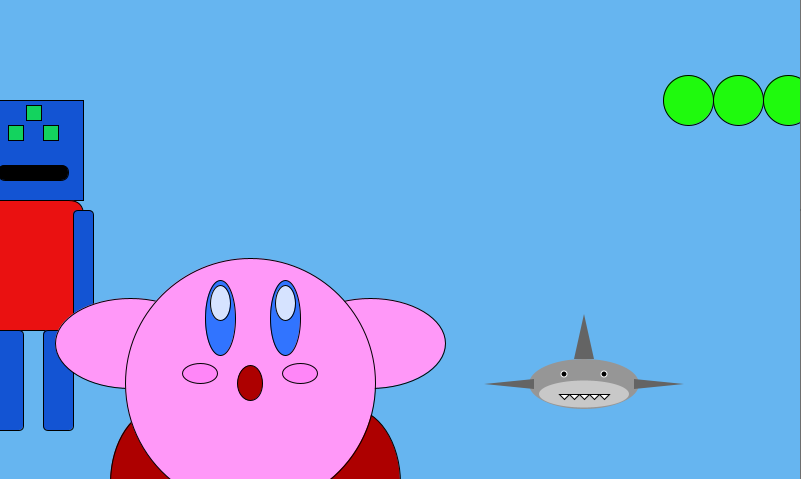
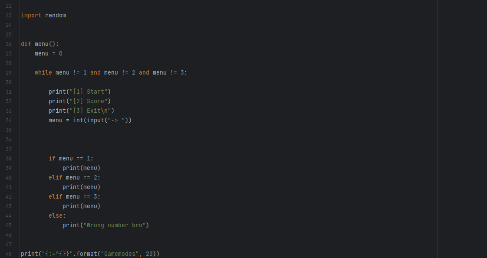

Experiência Criativa
Projeto 1: Jogo
Primeiro projeto da disciplina, onde fomos divididos em grupo para trabalhar na construção de um pequeno jogo na plataforma construct, onde aprendemos a programar e desenvolve-lo com ferramentas visuais.
Projeto 2: Aplicativo Multimídia
Nesse projeto, o objetivo era criar um aplicativo Multimídia. para isso utilizamos uma ferramenta chamada processing com uma linguagem baseada na linguagem Java. Ínicialmente, para aprender a usar tal ferramenta, também em grupos, testamos o programa com personagens em movimento.
Após essa etapa, passamos a trabalhar no projeto principal. Eu e o meu grupo escolhemos fazer um simulador da detran com 10 perguntas, onde caso o usuário acertasse um determinado número de questões, ele seria aprovado.
Raciocínio Algorítmico
Projeto 1: Jokenpô
O único projeto feito até agora em Raciocínio Algorítmico foi um jogo de Pedra, Papel ou tesoura.
Fundamentos de Sistemas Ciberfísicos
Projeto sobre Sistemas Operacionais (SO)
Fizemos um sorteio entre diversos grupos dando para cada um um sistema operacional para pesquisar e apresentar. O meu grupo ficou responsável pelo Zorin OS, um sistema baseado no ubuntu do linux.